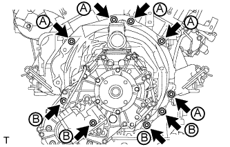
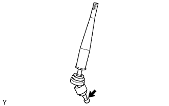
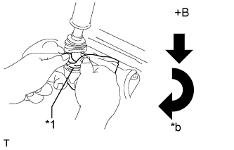

МЕХАНИЧЕСКАЯ ТРАНСМИССИЯ В СБОРЕ (для моделей с 1GR-FE) > УСТАНОВКА |
| 1. УСТАНОВИТЕ РАЗДАТОЧНУЮ КОРОБКУ В СБОРЕ |
Для моделей с 1KD-FTV:
Закрепите раздаточную коробку в сборе с помощью 8 болтов и 2 кронштейнов.
Кроме моделей с 1KD-FTV:
Закрепите раздаточную коробку в сборе с помощью 8 болтов и кронштейна.
| 2. УСТАНОВИТЕ ВЕРХНЮЮ КРЫШКУ ТРАНСМИССИИ В СБОРЕ |
Установите верхнюю крышку и закрепите ее 2 болтами.
| 3. УСТАНОВИТЕ МЕХАНИЧЕСКУЮ ТРАНСМИССИЮ С РАЗДАТОЧНОЙ КОРОБКОЙ |
|  |
Установите механическую трансмиссию с раздаточной коробкой и закрепите 9 болтами.
| 4. ПОДСОЕДИНИТЕ ШЛАНГ САПУНА МЕХАНИЧЕСКОЙ ТРАНСМИССИИ И РАЗДАТОЧНОЙ КОРОБКИ В СБОРЕ |
Подсоедините 2 шланга сапуна к переходнику раздаточной коробки.
Подсоедините 4 шланга сапуна к кронштейну и картеру сцепления.
Закрепите зажим шланга сапуна.
| 5. ПОДСОЕДИНИТЕ ЖГУТ ПРОВОДОВ |
Подсоедините жгут проводов и закрепите соединение болтом.
Установите 7 зажимов.
Подсоедините 2 разъема.
| 6. УСТАНОВИТЕ ЗАДНЮЮ ПОДУШКУ ОПОРЫ ДВИГАТЕЛЯ № 1 |
Установите заднюю подушку опоры двигателя № 1 и закрепите ее 4 болтами.
| 7. УСТАНОВИТЕ ПРАВУЮ ПЕРЕДНЮЮ ПОДУШКУ ОПОРЫ ДВИГАТЕЛЯ |
Установите подушку опоры и закрепите ее болтом.
| 8. УСТАНОВИТЕ ПОПЕРЕЧИНУ РАМЫ № 3 В СБОРЕ |
Установите поперечину рамы № 3 в сборе и закрепите ее 4 болтами и 4 гайками.
Вверните 4 болта в поперечину рамы № 3 в сборе.
| 9. УСТАНОВИТЕ ЛЕВЫЙ КРОНШТЕЙН ЭЛЕМЕНТА ПЕРЕДНЕЙ ПОДВЕСКИ |
Установите левый кронштейн элемента передней подвески и закрепите его 4 болтами.
| 10. УСТАНОВИТЕ ПРАВЫЙ КРОНШТЕЙН ЭЛЕМЕНТА ПЕРЕДНЕЙ ПОДВЕСКИ |
Установите правый кронштейн элемента передней подвески и закрепите его 4 болтами.
| 11. УСТАНОВИТЕ ГИДРОАККУМУЛЯТОР ПРИВОДА СЦЕПЛЕНИЯ В СБОРЕ |
Установите гидроаккумулятор привода сцепления (Нажмите здесь).
| 12. УСТАНОВИТЕ РАБОЧИЙ ЦИЛИНДР СЦЕПЛЕНИЯ В СБОРЕ |
Установите рабочий цилиндр (Нажмите здесь).
| 13. УСТАНОВИТЕ СТАРТЕР В СБОРЕ |
Установите стартер (Нажмите здесь).
| 14. УСТАНОВИТЕ КАРДАННЫЙ ВАЛ В СБОРЕ |
Установите карданный вал (Нажмите здесь).
| 15. УСТАНОВИТЕ ПЕРЕДНИЙ КАРДАННЫЙ ВАЛ В СБОРЕ |
Установите передний карданный вал (Нажмите здесь).
| 16. УСТАНОВИТЕ НИЖНИЙ ЗАЩИТНЫЙ КОЖУХ КАРТЕРА РАЗДАТОЧНОЙ КОРОБКИ |
Установите нижний защитный кожух картера раздаточной коробки и закрепите его 4 болтами.
| 17. УСТАНОВИТЕ ТЕПЛОЗАЩИТНЫЙ ЭКРАН КАРДАННОГО ВАЛА |
Установите теплозащитный экран карданного вала, закрепив его 2 болтами.
| 18. УСТАНОВИТЕ ПРИЕМНУЮ ТРУБУ В СБОРЕ |
Установите приемную трубу (Нажмите здесь).
| 19. ДОБАВЬТЕ МАСЛО ДЛЯ МЕХАНИЧЕСКИХ ТРАНСМИССИЙ |
| 20. ПРОВЕРЬТЕ МАСЛО МЕХАНИЧЕСКОЙ ТРАНСМИССИИ |
Установите автомобиль на ровной поверхности.
 |
Убедитесь в том, что уровень масла отстоит от нижнего края отверстия для заливной пробки на 0 - 5 мм (0 - 0,196 дюйма).
Если уровень масла низкий, проверьте, нет ли утечек.
Установите новую прокладку и пробку наливного отверстия.
| 21. УСТАНОВИТЕ НАПОЛЬНЫЙ РЫЧАГ ПЕРЕКЛЮЧЕНИЯ ПЕРЕДАЧ В СБОРЕ |
|  |
Нанесите универсальную консистентную смазку на конец рычага переключения передач.
 | Универсальная консистентная смазка |
|  |
Закройте крышку рычага переключения передач тканью.
| *1 | Ткань |
| *a | Вниз |
| *b | По часовой стрелке |
Надавливая на крышку рычага переключения передач, поверните ее по часовой стрелке, чтобы закрепить рычаг переключения передач.
| 22. УСТАНОВИТЕ ЧЕХОЛ № 1 РЫЧАГА ВЫБОРА И ПЕРЕКЛЮЧЕНИЯ ПЕРЕДАЧ |
Установите чехол рычага переключения передач и закрепите его 4 винтами.
Введите в зацепление 2 фиксатора.
| 23. УСТАНОВИТЕ ОБЛИЦОВКУ ПАНЕЛИ ПОЛА В СБОРЕ |
Подсоедините все разъемы.
Введите в зацепление 8 фиксаторов и 2 захвата и установите облицовку панели пола.
| 24. УСТАНОВИТЕ РУКОЯТКУ РЫЧАГА ПЕРЕКЛЮЧЕНИЯ ПЕРЕДАЧ В СБОРЕ |
Установите рукоятку на рычаг переключения передач.
| 25. ПОДСОЕДИНИТЕ ПРОВОД К ОТРИЦАТЕЛЬНОМУ (-) ВЫВОДУ АККУМУЛЯТОРНОЙ БАТАРЕИ |